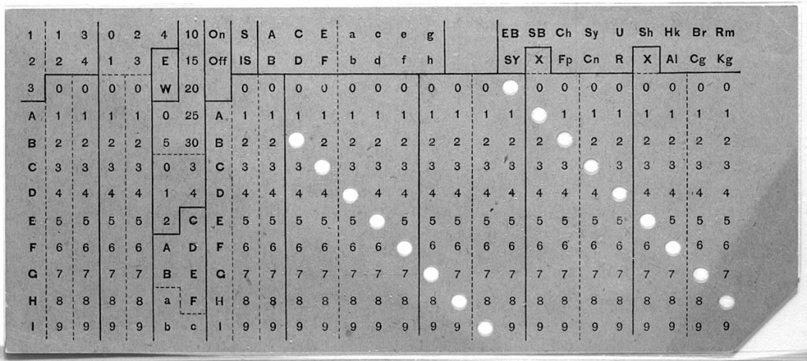

Brief history of programming languages
I was having lunch with a friend, and he asked me a question I should know the answer to, and only knew partially: what’s the history of modern programming languages? How did we get here?
I told him about machine language, how people wanted to make it easier and came up with progressively more abstract languages that are still then eventually translated into 0s and 1s.
But—by chance I was watching Crockford on JavaScript, and he started with telling the actual story—although focusing on JavaScript and the languages it was influenced by—and it’s way more interesting.
Punched cards
Everything started with punched cards—which are simple pieces of paper with holes in them (pictures down below).
Invention
The US Constitution requires the government to census citizens every 10 years. By the end of the 19th century, the population had grown so much that the 1880 census had taken 8 years to complete using pen and paper.
In 1890, Herman Hollerith was awarded the job to come up with a solution, which ended up being punched cards to hold the data, and a tabulating machine to count and sort it.
Data was encoded by the locations of holes in a stiff piece of paper, laid out in now-familiar columns and rows, and could be processed mechanically.
- 
- Hollerith punched card
The census was completed in 1 year.
IBM
In 1896 Hollerith started his own business when he founded the Tabulating Machine Company, which leased its equipment and sold its cards to major insurance companies and the countries of England, Italy, Germany, Russia, Austria, Canada, France, Norway, Puerto Rico, Cuba, and the Philippines (see http://en.wikipedia.org/wiki/Herman_Hollerith#Inventions_and_businesses).
The company was later merged with other corporations, and in 1924 eventually became the International Business Machines Corporation. That’s right—that would be IBM.
Modern use
Punched cards were recognized as a great way to input data into a machine.
IBM was still using the same system—called Unit Record Management—all the way into the 70s, although of course with a lot more automation compared to Hollerith’s original solution.
Hollerith’s punched card’s fieldsets were more spread out. Later, they were reorganized to simpler columns and rows.
80-character limit
Actually, 80 columns by 12 rows. You might have seen the 80-character limit and yes, that’s where it comes from, since 80 was the maximum amount of characters per card.
The thing has been obsolete for decades but we still have the 80-characters limit today.
- An 80-column punched card of the type most widely used in the 20th century.
The cards where used for everything. Sometimes, they were sent to customers instead of bills, and they customers to handle them carefully and send them back along with their payment. Then, the company would process them again to register the transaction.
Accounting machines were programmable, and were pretty much the first example of common modern computers.
Mainframes/timesharing era

- IBM 704 mainframe (photo: Lawrence Livermore National Laboratory)
Mainframes are big (literally) computers for governments and corporations used for running mission-critical applications.
Before the advent of PCs (50s through the 70s), mainframes were the only computers that people would use.
They were expensive, and only huge corporations and some universities owned one. Pretty much every machine was unique, and completely different from other mainframes. A whole system was comprised of many units and would take up a whole room.
Mainframes stored programs and data onto memory. To create programs, you had to use extremely primitive instructions.
Punched cards (again)
There is a reason why I started with punched cards :-)
To execute programs, you would have bunch of punched cards with your instructions. As a programmer, you didn’t own a computer, but would write your program on punched cards (or a paper, which you’d have someone turn into punched cards), and then handle them to an operator, who would feed them to the machine at your university or company. You’d come back after a few hours and the operator would have a printout of the results and of course would give you your deck back.
If you missed a comma, you’d have to fix the error and come back the next day to try again.
Luckily I wasn’t even born when this was the norm, but I can see how a programmer’s life must have sucked.
Time-sharing
Because of how expensive computer time was, during this period the most common way to use a computer yourself was through time-sharing.
This means that people would share a single machine’s resources via terminals hooked up to the mainframe. You would program using paper tape with a teletype, and submit your program when you were done.
Teletypes were slow, printing 10 chars/sec. which meant you had to be very concise with the feedback your program would give you.
You would only get charged when you submitted the job, while you could be programming offline (without being connected to the mainframe).
Time-sharing was introduced in the 60s and it was the most common way to program until the end of the 70s.
- A teletype with punched tape reader and punch, usable as a computer terminal. Photo: CC Arnold Reinhold
{kind=link}
ASCII
As for character sets, they had an extremely limited amount of characters—with no accented letters, which makes it good for English only.
The most common one was ASCII. It was very hard to share information between different countries, and impossible for Asian countries.
Why do we call errors “bugs”?
In 1889, Thomas Edison had been up two nights to fix his phonograph, which supposedly wasn’t working and made a sound similar to crickets/bugs. This gave birth to jokes about the crazy inventor who would get wealthy if he count get all the bugs out of his inventions, and it’s the first recorded usage of “bugs” to mean defects.
During WW2, Grace Hopper found a moth smashed in a relay, when a calculator stopped working, and she taped it to a note reading ‘“first actual case of bug being found”.

- Photo of “first computer bug”
The “mother of all demos”
In 1968, Doug Engelbart he demostrated:
- the mouse
- hypertext
- onscreen displays
- groupware
- videoconferencing
- todo lists
His ideas didn’t made him rich or catch on right away, but were the basis for the research done at Xerox PARC, which gave us the first GUI that was later adopted and popularized by Apple Lisa, the Macintosh, and ultimately Microsoft.
Mini/microcomputers
After mainframes, minicomputers started popping up.
Eventually, microcomputers became popular. Microcomputers were very smart terminals or personal computers (although almost no one had one).
I would say computers made in the 70s.
Microsoft
Everyone probably knows this—I don’t know—but Microsoft started with the Altai 8800—a DIY computer kit—working on a programming language to make it somewhat useful for the Albuquerque-based company MITS. “Microsoft” actually means “microcomputer software”.
Brief history/overview of programming languages
Alright, so basically at the beginning programmers didn’t have it easy.
There are computers that work differently, but virtually all computers understand only binary code. That is, a series of 0s and 1s. Computers use this approach because it correlates well with electronic switching: off = 0, and on = 1. Computers are actually dumb.
At the beginning, in order to program a computer you had to speak its language. That is, you had to work with 0s and 1s. Because this is obviously a nightmare for most human beings, computer scientists have tried hard to abstract this process to make it easier for people to make programs.
Here’s a brief history and overview of their attempts.
Machine code
Machine code or machine language is a set of instructions executed directly the computer’s CPU.
Each instruction performs a very specific and low-level task. Every program directly executed by a CPU is made up of a series of such instructions.
Numerical machine code (i.e. not assembly code) may be regarded as the lowest-level representation of a compiled and/or assembled computer program or as a primitive and hardware-dependent programming language.
While it is possible to write programs directly in numerical machine code, it is tedious and error prone to manage individual bits and calculate numerical addresses and constants manually. It is therefore rarely done today, except for situations that require extreme optimization or debugging.
See: http://en.wikipedia.org/wiki/Machine_code#Machine_code_instructions
Assembly language
Assembly language is not machine code, but almost. It’s directly correlated to the underlying architecture, so there is no abstraction.
To turn assembly language into machine code, an assembler is used. The assembler is the first software tool ever invented.
Here is a snippet of code:
MOV AL, 1h ; Load AL with immediate value 1 MOV CL, 2h ; Load CL with immediate value 2 MOV DL, 3h ; Load DL with immediate value 3
Assembler were available in the 50s, since they don’t require much code analysis: most of the times they simply take the instructions and translate them directly into their corresponding executable value. As a programmer, you have to think like the underlying machine or architecture.
Assembly language is still used on electronic equipment with limited resources, and before high-level languages and libraries get loaded (ex., hardware firmware).
In the 70s and 80s assembly language was fairly common. For instance, all game console used assembly language, as the amount of memory available could be as little as a few kilobytes. Lots of code in the original 1984 Macintosh was written in assembly language to save resources.
Fortran
By this time, a lot of research had been done in high-level programming languages (meaning anything more abstract than assembly).
Fortran was originally developed by IBM in the 50s.
At the time, languages were created to be specialized to solve a specific set of problems: Fortran was intended for scientific processing, and it became the dominant language within this field right away, and enjoyed an enormous amount of success during the following 50 years.
It is still one of the most popular languages in the area of high-performance computing and is the language used for programs that benchmark and rank the world’s fastest supercomputers (see http://en.wikipedia.org/wiki/Fortran).
Fortran established the convention of using the asterisk for multiplication, which is still used today in virtually all languages.
This is how it looks:
Program Hello Print *, "Hello World!" End Program Hello
Here’s a punched card containing a typical Fortran program:
COBOL
COBOL (COmmon Business-Oriented Language) was designed for business use. It was an attempt to make programming languages more similar to English, so that both programmers and management could read it.
Among its designers was Grace Hopper (the lady who discovered “the bug”) and who had invented the English-like data processing language FLOW-MATIC, the perfect candidate to help create a common business language that looked similar to English.
Here’s a “Hello World!” program in COBOL:
IDENTIFICATION DIVISION.
PROGRAM-ID. HELLO-WORLD.
ENVIRONMENT DIVISION.
DATA DIVISION.
PROCEDURE DIVISION.
MAIN.
DISPLAY 'Hello, world.'.
STOP RUN.
BASIC
BASIC (Beginner’s All-purpose Symbolic Instruction Code) was designed in 1964 by John G. Kemeny and Thomas E. Kurtz at Dartmouth College in New Hampshire.
BASIC was developed specifically for timesharing. It was a very stripped-down version of Fortran, to make it easier to program.
It came with a clever way of editing programs using line numbers, for both programming and other operations like GOTO line jumping.
Versions of BASIC were extremely common on microcomputers in the mid-70s and 80s, which usually shipped with BASIC directly in the machine’s firmware, allowing small business owners, professionals, hobbyists, and consultants to develop custom software on computers they could afford.
BASIC spawned different languages, including Visual BASIC, the most popular programming language in the world for a long time, which Microsoft created from Microsoft BASIC.
Here’s a simple program (in GW-BASIC):
10 INPUT "What is your name: ", U$ 20 PRINT "Hello "; U$ 30 INPUT "How many stars do you want: ", N 40 S$ = "" 50 FOR I = 1 TO N 60 S$ = S$ + "*" 70 NEXT I 80 PRINT S$ 90 INPUT "Do you want more stars? ", A$ 100 IF LEN(A$) = 0 THEN GOTO 90 110 A$ = LEFT$(A$, 1) 120 IF A$ = "Y" OR A$ = "y" THEN GOTO 30 130 PRINT "Goodbye "; U$ 140 END
ALGOL 60
ALGOL 60 (ALGOrithmic Language 1960) is a committee-driven, very good and influential language that came out in 1960.
It never got popular but it introduced a lot of important concepts, including getting rid of GOTO.
Jumping around from line to line in languages like BASIC made it hard to follow the flow of the program, and made writing programs error-prone.
ALGOL 60 introduced structure programming and blocks: it used BEGIN and END (because curly braces weren’t available), and it’s thanks to ALGOL 60 if we have blocks now instead of GOTO.
ALGOL also wanted to be less specialized, good for both scientific and business processing.
Here’s how it looked:
procedure Absmax(a) Size:(n, m) Result:(y) Subscripts:(i, k);
value n, m; array a; integer n, m, i, k; real y;
comment The absolute greatest element of the matrix a, of size n by m
is transferred to y, and the subscripts of this element to i and k;
begin integer p, q;
y := 0; i := k := 1;
for p:=1 step 1 until n do
for q:=1 step 1 until m do
if abs(a[p, q]) > y then
begin y := abs(a[p, q]);
i := p; k := q
end
end Absmax
Pascal
Pascal was designed in 1968–1969 and published in 1970 by Niklaus Wirth and was inspired by ALGOL.
It was extremely popular, and although originally designed as a teaching tool, lots of people used it for general programming for a long time.
However, it wasn’t modular enough and had some design challenges that made programming hard.
Obligatory snippet:
while a <> b do WriteLn('Waiting'); if a > b then WriteLn('Condition met') {no semicolon allowed!} else WriteLn('Condition not met'); for i := 1 to 10 do {no semicolon for single statements allowed!} WriteLn('Iteration: ', i); repeat a := a + 1 until a = 10; case i of 0 : Write('zero'); 1 : Write('one'); 2 : Write('two'); 3,4,5,6,7,8,9,10: Write('?') end;
(I actually remember programming in Pascal when I was 14 at school, pretty cool)
B
B was developed at Bell Labs in 1969. It was inspired by Fortran and BCPL.
B was essentially the BCPL system stripped of any component Thompson felt he could do without in order to make it fit within the memory capacity of the minicomputers of the time.
B introducted the += operator (although spelled =+), and the incre/decrement operators (++ and –)
printn(n,b) { extrn putchar; auto a; if (a=n/b) /* assignment, not test for equality */ printn(a, b); /* recursive */ putchar(n%b + '0'); }
C
C was born from taking B and adding some good ideas from Pascal. It was developed by Dennis Ritchie between 1969 and 1973 at Bell Labs (again).
C is probably the most important language out there. It was unbelievably successful (and it still is).
In addition, many languages are based on C, including:
- C++ (1976)
- Objective-C (1986)
- Perl (1988)
- Java (1991)
- Python (1991)
- JavaScript (1995)
- PHP (1995)
- C# (1999)
- Go (2007)
- …and many others
Simula
Norwegian simulation languages Simula I and Simula 67 are—syntactically—a fairly faithful superset of ALGOL 60.
Its contribution was enormous. Simula took ALGOL 60 and added objects to it, and is therefore considered the first object-oriented programming language.
Simula 67 (released in 1967) introduced objects, classes, inheritance and subclasses, as well as virtual methods, coroutines, and discrete event simulation.
If that wasn’t enough, it featured garbage collection. Not bad!
It looks like this:
Begin
Class Glyph;
Virtual: Procedure print Is Procedure print;
Begin
End;
Glyph Class Char (c);
Character c;
Begin
Procedure print;
OutChar(c);
End;
Glyph Class Line (elements);
Ref (Glyph) Array elements;
Begin
Procedure print;
Begin
Integer i;
For i:= 1 Step 1 Until UpperBound (elements, 1) Do
elements (i).print;
OutImage;
End;
End;
Ref (Glyph) rg;
Ref (Glyph) Array rgs (1 : 4);
! Main program;
rgs (1):- New Char ('A');
rgs (2):- New Char ('b');
rgs (3):- New Char ('b');
rgs (4):- New Char ('a');
rg:- New Line (rgs);
rg.print;
End;
Smalltalk
Simula had a huge influence on Alan Kay—who went to Xerox PARC and in 1972 started working on Smalltalk.
Smalltalk was originally designed for kids. It was thoroughly tested in the real world and revised many times. It was finally published 8 years after its first release, after several generations.
Smalltalk was a great language, and the first truly modern object-oriented programming language.
Because of its hard-to-grasp syntax, it never became popular. However, it influenced virtually all modern programming languages. Objective-C, C++, Java, C#, Eiffel, and Ruby are basically C combined with Smalltalk.
Example showing Smalltalk’s “alternative” to control structures:
result := a > b ifTrue:[ 'greater' ] ifFalse:[ 'less or equal' ]
Self
Another language influenced by Smalltalk—developed at Xerox PARC as well—was Self.
Self was designed for performance. It took Smalltalk, and removed classes to make it faster.
Instead of using classes, is used prototypes: Self allowed objects to inherit directly from other objects, without passing by classes.
Like you might have guessed already, a language which was highly influenced by Self is JavaScript.
Scheme
Scheme is based on the actor model. The actor model originated in 1973, and was a radical concept when it was conceived. It’s implemented in LISP, an artificial intelligence language created at MIT in 1958.
It includes tail recursion, lexical closures, and other brilliant stuff.
Example:
;; Calculation of Hofstadter's male and female sequences as a list of pairs (define (hofstadter-male-female n) (letrec ((female (lambda (n) (if (= n 0) 1 (- n (male (female (- n 1))))))) (male (lambda (n) (if (= n 0) 0 (- n (female (male (- n 1)))))))) (let loop ((i 0)) (if (> i n) '() (cons (cons (female i) (male i)) (loop (+ i 1))))))) (hofstadter-male-female 8) ===> ((1 . 0) (1 . 0) (2 . 1) (2 . 2) (3 . 2) (3 . 3) (4 . 4) (5 . 4) (5 . 5))
E
E is a union of Java and Joule, a language developed for security applications.
Based on the actor model, it implements the object capability model.
def makeMint(name) :any { def [sealer, unsealer] := makeBrandPair(name) def mint { to makePurse(var balance :(int >= 0)) :any { def decr(amount :(0..balance)) :void { balance -= amount } def purse { to getBalance() :int { return balance } to sprout() :any { return mint.makePurse(0) } to getDecr() :any { return sealer.seal(decr) } to deposit(amount :int, src) :void { unsealer.unseal(src.getDecr())(amount) balance += amount } } return purse } } return mint }
JavaScript
…and here it is.
JavaScript has become an extremely important language. It’s ubiquitous in web-capable devices, a pillar of the Web Platform and the base for most web and mobile applications. Thanks to Node.js, it’s making its way on the server as well.
JavaScript is based on Java, Scheme, and Self.
It was originally developed at Netscape, which wanted to implement something similar to Apple’s HyperCard—an application program and programming tool for Apple Macintosh and Apple IIGS that made it easy to build apps—and add it to the browser.
Its author Brendan Eich wanted to base it on Scheme, but Netscape’s management thought that people wouldn’t like its syntax and asked him to make it more similar to Java.
JavaScript borrows Java’s syntax (just because it had to), Scheme’s function model, and the prototypical nature of Self.
Because of Netscape’s situation, it was implemented and released in 2 weeks!!!
Hot content on webdev and more
Delivered to your inbox (not more than once/week).
Doesn’t RPG language warrant a reference ?
Definitely, this is not exhaustive, it’s mainly focused on languages that have inspired JavaScript :-)
As a new COBOL programmer in the 70’s, I remember the “grown-ups” telling us that the COBOL compiler actually created Assembler language and then that was made into machine language. There was even a compile option to show the Assmebler code.
You can do that with lots of languages. Try adding the -S flag when you compile some C, C++, Fortran or any other language supported by the GNU compiler toolchain (this is not exclusive to the GNU tools, of course).
Why no mention of PL/1?
This is not exhaustive, it’s mainly focused on languages that have inspired JavaScript :-)
Was PL/1 popular?
PL/1 was ported to micro-computers by Gary Kildall and called PL/M, which was used to write CP/M. It probably has nothing to do with JavaScript.
Oh, that’s kind of cool…
I programmed in machine code, Assembler and Fortran back in the 60s and 70s – I had to punch those cards but a programmers life didn’t suck then it was great ….I loved being a techie and I could get into the business then with no computer or maths degree….
Oh wow that’s awesome!
You’re right, it probably didn’t suck because that’s just how you did things. I’d say it would probably be more correct to say that it’s 100 times easier now.
Like Susan, I started in the 60’s, and I agree that it didn’t suck. Those were exciting times when the basis for most of what we do today was being created. The languages left a lot to be desired and resources were extremely limited, but the problems back then much simpler than what we do today. (The first two computers I worked on only had 16K of RAM.) (Yes, K, not M.) My very first program, part of my initial training, was written in IBM 1401 machine language. I had to keypunch the machine code into a single IBM card and run it! By the time the 70’s were over I had written in 360 /390 assembler, Cobol, RPG, Fortran, Basic (a couple of varieties), Pascal, Forth, PL/1, Z80 assembler, and 8086 assembler. We all had to use whatever language worked best for the task at hand — pretty much like happens today!
Hi! Author here… I should change that bit, something like “was 100 times harder”.
What do you think
I will share one fun story… I was at Purdue in the EE school in 1978 and UNIX was scaled up from the “small workgroup OS” that Bell Labs first created to a version that could handle hundreds of simultaneous logins, in part with some help from Purdue engineers. The reason? UNIX was indentified as a way that users could “edit their punch card decks” (using ‘vi’) and prepare code for submission to the CDC mainframe on campus. In the course of a few years, UNIX was handling all the campus input for the CDC mainframe and all the punch card machines were taken out of service! :-)
That’s interesting!
But—how could they edit punched card decks using ‘vi’..?
Scheme isn’t implemented in Lisp… it is a more refined version of Lisp. There are many Scheme implementations these days, being implemented in many languages, including Python, See for example, http://calicoproject.org/Calico_Scheme
BASIC (1964) should be listed after ALGOL 60 (1960).
Alan Kay started Smalltalk before 1982. You probably meant 1972 as Smalltalk-72 was the first verison and Smalltalk-80 was the last (at PARC).
YES! You’re right. Its was 1972, thanks for spotting that.
BASIC was also heavily influenced by ALGOL 60.
I think this needs some work, and could become really nice material. Apart from the fact that while beginning is okay, the rest lacks a bit of explanation, or isn’t saying (all) the truth. I’m mostly shocked by complete lack of Lisp language in there. Seriously – such influential language(I would even consider Lisp as a more important language than C itself), and it isn’t here? Sure, Scheme is one of Lisp family, but nothing was said about it apart from that it’s implemented in Lisp(which isn’t true).
Lisp introduced several important things to programming that even today, programming languages are still discovering. Many things like garbage collection, lambda clojures, functions as first class citizens, etc. are found in modern languages. And if you remember that all of it was founded in ~60s – it’s really impressive.
I shall add Lisp, or actually improve the whole bottom half of the article…
Great article, but you need to proofread it.